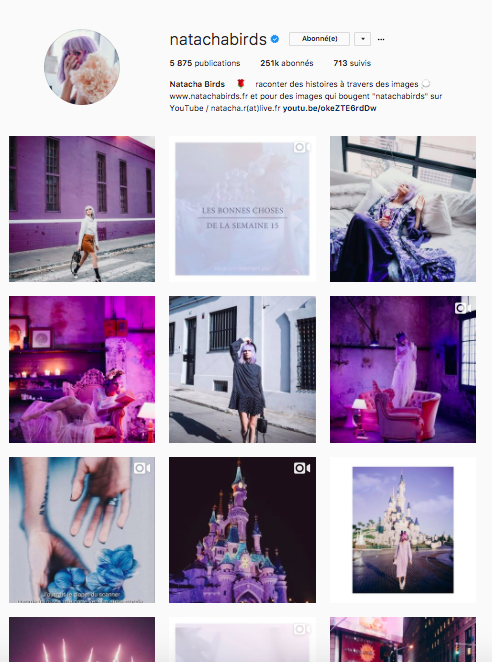
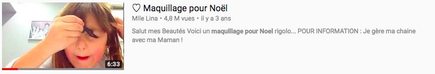

Atteindre et fidéliser les Z
Miser sur le marketing d’influence
Qu’est ce qu’un influenceur ?
"Un influenceur est un individu qui par son statut, sa position ou son exposition médiatique peut influencer les comportements de consommation dans un univers donné." B.Bathelot, 15 février 2017
On appelle généralement "influenceur" ou "talent" les internautes ayant une forte présence sur internet. Les influenceurs sont également actifs sur un grand nombre de réseaux sociaux en fonction de leur secteur et domaine de prédilection. Les influenceurs agissent en qualité d’experts, de passionnés dans un domaine.
Leur nombre d’abonnés sur les réseaux sociaux constitue leur communauté. Plus la communauté est grande, plus le talent aura d’influence. Ils sont considérés comme un relais d’information légitime. Ils ont un pouvoir d’influence et de recommandation sur leurs abonnés. A travers la création de contenu, ils deviennent des leaders d’opinion.
Différents types d’influenceurs existent. Ils se distinguent premièrement via la plateforme de communication privilégiée :
- Youtubeurs "Un youtubeur est une personne qui utilise le site internet Youtube pour publier régulièrement des vidéos qu'il réalise. Cette activité peut être une simple passion ou permettre de gagner de l'argent grâce aux publicités avant les vidéos. Les Youtubeurs les plus connus comptent des millions d'abonnés à leur "chaîne". Les plus connus en France étant Cyprien et Norman avec plus de 10 millions d’abonnés.
- Ils sont rémunérés par Youtube grâce aux publicités qui sont diffusées avec leurs vidéos ou via des partenariats avec des marques que certains youtubers peuvent mettre en avant." (Source Wikipedia)
- Blogueurs : sur la base du journalisme un blogueur est une personne qui crée du contenu photo ou écrit des articles sur un site personnel.
- Instagramers : plus récemment un nouveau type d’influenceurs a émergé. Les Instagramers sont connu pour les photos qu’ils partagent sur leur compte Instagram, essentiellement du contenu sur leur quotidien et leurs expériences. L’aspect esthétique d’Instagram attire de nombreux artistes qui créent un univers graphique et colorimétrique reconnaissable sur leur compte.
 - Streamers : dans le monde du E-sport de nombreux joueurs se filment durant leurs parties de jeux vidéos.
Ils peuvent s’exprimer à travers différents formats de contenus :
- articles de blog
- vidéos
- photos
- publications sur le réseaux sociaux
- podcast
Très souvent les influenceurs font un 360° pour diffuser leur contenu. Par exemple le relais sur les réseaux sociaux d’un article de blog incluant une vidéo Youtube ou des photos.
Les influenceurs connus travaillent dur pour créer du contenu original et qualitatif. Les influenceurs réputés finissent souvent par être accompagnés d’agence ou par se regrouper afin de mutualiser les ressources notamment techniques. Les talents partagent beaucoup avec leur communauté et instaurent un lien particulier. Certaines communautés se rassemblent et se reconnaissent à travers ce point commun.
Le succès des influenceurs vient du mélange entre "monsieur tout le monde" très accessible et la célébrité.
Puis ils se distinguent en fonction des thématiques du contenu qu’ils créaient :
- mode, beauté
- lifestyle
- humour
- gaming
- high tech, nouvelles technologies
- musique
- politique
- sport
- bricolage
Stratégie payante pour les entreprises
La génération Z ne se retrouve pas dans les publicités leur montrant un idéal impossible à atteindre. Ils s’identifient à des personnes et des campagnes qu’ils jugent réelles. Ce désir d'engagement avec de vraies personnes est profond selon l’étude de 2016 de "Deep Focus" qui révèle que 63% des Z veulent voir des «personnes réelles» dans les publicités, tandis que 37% préfèrent les célébrités. Intégrer le marketing d’influence dans le processus de création de contenu ou dans les campagnes de communication des marques, est de plus en plus reconnu.
Les plus gros influenceurs actuels sont issus de la première génération de blogueurs ou Youtubeurs et issus de la génération Y. Ils doivent leur succès aux Y mais surtout aux Z qui les suivent.
La rémunération des influenceurs est depuis longtemps un sujet tabou pour les talents et leur communauté. Les premiers Youtubeurs, blogueurs ont commencé leur activité comme un nouvel hobby rendu possible par de nouvelles plateformes web. L’amateurisme des débuts a laissé place à de véritable vocation aujourd’hui comparable au métier de journaliste. Les marques de beauté et de mode ont été les premières à comprendre ce nouveau phénomène d’influence. Les blogs et chaînes youtube sont venus en contre courant des magazines et publicités grâce à leur authenticité.
L’audience des influenceurs est extrêmement engagée et qualifiée ce qui représente un support de communication très intéressant pour les marques.
L’Oréal a compris le pouvoir d’influence des blogueurs et Youtubeurs. Les nouvelles égéries de la marque ne sont plus des stars hollywoodiennes mais des blogueuses modes. Cette nouvelle génération d’égéries permet de cibler une clientèle plus jeune.
Prendre comme ambassadeur de marque un influenceur est une stratégie qui fonctionne très bien lorsque l’on cherche à gagner en notoriété auprès des Gen Z. Utiliser leur pouvoir d’influence et leur image afin d’y associer celle de la marque.
Pour mettre en place une stratégie de marketing d’influence, il faut commencer par identifier les bons influenceurs pour une marque. L’influenceur n’est pas un porte parole d’une marque, sa valeur ajoutée réside dans son univers et son ton. Il est primordial de choisir des influenceurs en fonction de l’image, de l’audience, du ton, du professionnalisme de l’influenceur et de la qualité du contenu créé.
La taille de communauté de l’influenceur est un élément très important à prendre en compte dans la mise en place d’une stratégie d’influence car le coût et les retombées seront différentes.
Deux stratégies existent, cibler des influenceurs très connus et qui impliquent des coûts plus élevés ou viser des influenceurs plus petits mais travailler sur un plus grand nombre d’influenceurs.
Le succès d’un partenariat repose beaucoup sur la relation entre l’influenceur et la marque. Entretenir de bonnes relations et s'intéresser à l’univers du talent est primordial. Chaque collaboration est unique car pour fonctionner elle doit être la combinaison entre l’univers de la marque et celui de du talent. La majorité des influenceurs satisfaits du partenariat partagent gratuitement du contenu supplémentaires en dehors du cadre de l’accord passé.
Comme pour toute campagne marketing il faut en amont définir des objectifs de campagne clairs ainsi que des des KPIS pour mesurer le succès de l’opération. Est ce une campagne de notoriété, ou de promotion d’un produit spécifique ? Le KPIS sera t’il le nombre de visites, de ventes …
Plusieurs types de partenariats existent.
Les cadeaux et envoi de produits
Faire connaître un produit ou un service en l’offrant à un influenceur est le premier type de partenariat possible à mettre en place. Celui ci dépend de l'intérêt que trouvera les influenceurs dans votre produit. Si l’influenceur est séduit par le produit il sera susceptible de partager l’informations gratuitement à sa communauté. Cette méthode est plus facilement applicable pour les petites marques encore peu connues ou pour des produits rares et exclusifs. L’entreprise ne pourra rien demander en retour et n’aura aucunes assurance d’avoir des retombées. Si le produit envoyé plaît à l’influenceur et qu’il souhaite communiquer la découverte à sa communauté la notoriété du produit et de la marque augmentera.
Encore une fois la taille de la communauté aura un impact important sur les retombées. Par exemple une blogueuse mondialement connue sera moins susceptible d’inclure dans sa ligne éditorial un produit gratuit reçu sans rémunération. A contrario une blogueuse moins connue voudra plus facilement faire découvrir à sa communauté une nouveauté qui lui plait sans rémunération.
Cette méthode était généralement utilisée pour les journalistes.
L’envoi de produits peut être axé différemment. L’entreprise peut fournir du matériel dont l'influenceur a besoin pour exercer son activité. Par exemple du matériel multimédia, de l’équipement sportif ou du matériel exceptionnel pour les besoins d’une vidéo précise. La marque est assurée d’avoir une mention écrite ou orale en échange et en remerciement.
Faire vivre des expériences aux influenceurs
Comme pour les cadeaux et de produits gratuits les marques peuvent faire parler d’elles en faisant vivre des expériences uniques aux influenceurs.
La marque de boisson Havana a choisi d’emmener un groupe de Youtubeur et blogueurs jusqu’à Cuba afin de promouvoir leurs boissons.
Avec une opération aussi exceptionnelle la marque s’assure de nombreuses retombées de la part des influenceurs. Ce type d’opération comprend un coût élevé il est important de sélectionner des talents assez influents pour obtenir le maximum de visibilité.
Autre exemple : À l’occasion des soldes d’hiver 2017 Cdiscount a réuni une vingtaine d’influenceurs lors d’un Live Facebook appelé What the Live Cdiscount.
Le but ? communiquer autour des soldes de manière détournée et originale. Cdiscount offre un contenu unique et différenciant aux Z. Le succès de cet événement repose sur l’expérience appréciée et vécue par les influenceurs.
En s’associant à des Youtubeurs connus la marque change son image de marque et rentre dans le cœur des Z.
Articles, posts, videos sponsorisés
Pour être certaines d’avoir des retombées, les marques rémunèrent les influenceurs et se mettent d’accord sur le type de contenu, le nombre de mention de la marque et l’utilisation du contenu. Le talent met en avant le produit ou le service en utilisant le langage et les codes qui lui sont propres. La valeur ajoutée d’un article sponsorisé repose sur la crédibilité de l’influenceur. Les abonnés suivent l’influenceur pour ses goûts et son univers qu’ils aprécient. Si le discours est trop commercial et que l’on ne retrouve pas la "patte" de l'influenceur, l’article n’aura pas plus d’impact qu’une publicité classique.
Ce type de partenariats peut faire partie d’une campagne avec plusieurs influenceurs ou un partenariat unique.
Co branding et publicité
De nombreuses marques lance des collections de produits en collaboration avec des influenceurs. Une manière de faire de la publicité pour la marque et de susciter l’envie.
Ces collections souvent éphémères attire la communauté de l’influenceur qu’elle soit cliente ou non de la marque.
L’enseigne Lidl surprend et communique autour de nouvelles gammes de produits inattendues telles que la mode.
Quoi de plus efficace pour faire connaitre cette catégorie de produits qu’une collection en collaboration avec une influenceuse ? En plus de s’associer à l’actrice Heidi Klum Lidl a lancé une campagne d’influenceurs d’envergure.
La marque a invité un groupe d’influenceuses mode à New York pour leur présenter la collection utilisant les codes des grands défilés. http://www.youmakefashion.fr/2017/09/vlog-collection-lidl-x-heidi-klum-lookbook/
Monoprix lance régulièrement des collections éphémères, également appelées collection capsules avec des designers et influenceurs.
Exemple MakeMyLemonade http://makemylemonade.com/wear-lemonade-x-monoprix/
Adidas est allé encore plus loin en confiant la distribution d’une de ses pairs de chaussures exclusivement aux influenceurs. Les chaussures sont accessibles seulement grâce à un code fourni par un influenceur. Le succès de cette campagne montre la force du marketing d’influence. https://www.lesechos.fr/industrie-services/conso-distribution/030727920416-adidas-vend-ses-nouvelles-chaussures-sans-magasin-ni-site-web-2122827.php
Faire créer du contenu de marque par les influenceurs fonctionne très bien auprès des Z.
L’entreprise multinationale Coca Cola mise une partie de sa communication sur les influenceurs en multipliant les campagnes visant les Z.
La dernière campagne est basée sur une web-série imaginée et écrite par des Youtubeurs.
En lançant FANTAxYOU la marque de boissons gazeuses cible les Gen Z en plein cœur.
La marque Nina Ricci a confié une campagne de communication pour Noel à la youtubeur Andy en se basant sur ses formats de vidéos Youtube :
Tests et avis
Les Z font confiance à leur communauté et accordent beaucoup d’importance aux avis laissé sur les produits. "84 % des consommateurs effectuent des recherches en ligne avant de prendre une décision d’achat et 7 personnes sur 10 lisent des avis en ligne avant de faire un achat." Ils valorisent encore davantage l’avis d’un influenceur.
Ils font confiance aux influenceurs pour leur dire la vérité sur la qualité d’un produit ou service. Ils servent de garants et d’experts.
Ces partenariats peuvent être l’occasion de créer du contenu tutoriel sur un produit. La marque peut négocier le droit d’exploiter le contenu sur son site par exemple.
Jeu-concours
Les jeux concours sont très populaires sur les réseaux sociaux. Ils permettent aux marques et influenceurs de viraliser un contenu au delà de leur communauté. De nombreuses marques proposent des partenariats autour de jeux concours avec comme mécanique le partage et le like de pages. Cette méthode permet de faire grossir la fanbase définition de l’entreprise. Elle permet également de récompenser et faire plaisir aux abonnés.
De la même manière que pour l’envoi de produits en fonction de la taille, de la communauté, l’influenceur demandera ou non une rémunération. Il existe beaucoup de mécanique de jeux concours.
Programme d’affiliation
Lorsqu’une campagne a pour but de générer des ventes ; mettre en place un programme d’affiliation permet d’augmenter le trafic vers un site. L’influenceur, en s’inscrivant à ce programme, recevra une commission sur chaque vente faite via le lien publié sur son blog ou sur ses réseaux sociaux. Ce type de partenariat peut être automatisé et améliorer la présence d’une marque sur internet.
Amazon a développé un système d’affiliation extrêmement performant qui lui permet d’être référencé sur de nombreux blogs sans mettre en place de partenariat unique avec les influenceurs.
Récompenser les communautés
Les blogueurs souhaitent souvent remercier et gâter leur communauté. Dans ce cas les demandes de partenariats peuvent également venir des influenceurs.
La blogueuse YouMakeFashion s’est entourée de nombreuses marques afin de récompenser sa communauté et lui faire vivre une expérience inédite.
Durant quelques jours des lectrices tirées au sort participe à des ateliers durant lesquels les marques sont mise en avant.
La communication en amont et en aval de cet évènement est très positif pour les marques qui sont associées à l’image positive et généreuse de la blogueuse.
Pour fêter leurs 2 millions d’abonnés les Youtubeurs Carlito et Mcfly ont organisé un Live Youtube dont le but était d’offrir des cadeaux à leur communauté.
Cdiscount s’est associé à ces talents pour leur permettre de récompenser leur communauté.
Le bénéfices est double pour la marque qui met en avant ses gammes de produits et atteint positivement une nouvelle cible.
Gagnant gagnant gagnant : le trio magique
Les Z ont conscience d’avoir de la valeur pour les influenceurs, ils savent que grâce à leur engagement et leurs likes les talents sont sollicités et rémunérés par les marques. L’authenticité et la transparence qui avaient créé l’engouement du début a été remise en question par les communautés qui ont retrouvé les codes des publicités traditionnelles. La sincérité et la transparence sont extrêmement importants pour les Z, toujours selon "Deep Focus" 79% attendent de la transparence sur les partenariats. Le terme "placement de produit" est utilisé, lorsque les influenceurs sont rémunérés par une marque pour faire de la publicité d’un produit. Ce terme est devenu négatif avec la multitude de vidéos et articles promotionnels jugés non sincère. De nombreux influenceurs ont dû prouver leur honnêteté et intégrité en communiquant exclusivement sur les produits ou services qu’ils jugent de qualité pour leur communauté. Les partenariats et les collaborations entre les influenceurs et les marques sont maintenant plus ou moins clairement explicités via des hashtags tels que #partenariat #collaboration #ad (advertising = publicité).
En Angleterre, les partenariats entre les marques et les influenceurs sont considérés comme de la publicité et doivent légalement être signifiés aux abonnés. Ce type de législation pourrait très vite arriver en France. http://www.tanke.fr/marketing-dinfluence-et-collaboration-quelle-legislation/
Les réseaux sociaux américains ont pris les devants en ajoutant la possibilité de signifier en haut des publications si il s’agit d’un partenariat rémunéré.
De plus en plus d’influenceurs récompensent leur communauté en leur faisant profiter des partenariats qu’ils signent. Une manière de satisfaire leurs abonnés et de ramener un équilibre "gagnant/gagnant/gagnant", c’est aussi une méthode utilisée pour faire accepter les partenariats rémunérés à leur communauté.
Des influenceurs de plus en plus jeunes.
Les Z sont nés avec les nouvelles technologies qu’ils intègrent à leur quotidien de manière naturelle. Selon l’étude de "Deep Focus" 85% d'entre eux utilisent YouTube. C’est davantage que tout autre réseau social.
Pour les plus jeunes Youtube fait partie intégrante des médias et moyens de communication. Il n’est donc pas étonnant de voir des enfants de 4 ans vouloir communiquer avec leur communauté de la même manière qu’un Y téléphonait naturellement très jeune.
Cette nouvelle génération Youtube intéresse les marques qui n’hésitent pas à envoyer des produits tests à des enfants de 5 ans. L’exemple le plus parlant est celui de la très jeune Youtubeuse Mlle Lina qui a commencé ses vidéos à l’âge de 4 ans et dont les vidéos comptent plus de 4 millions de vues.
Lina a maintenant grandit et continue son activité de Youtubeuse
Top Youtubeurs à connaître
Felix Kjellberg (PewDiePie) Le plus grand youtubeur mondial est suédois. Il s’est fait connaître avec des vidéos sur les jeux vidéo et compte aujourd’hui plus de 50 millions d’abonnés.
Germán Garmendia connu sous le pseudo HolaSoyGerman est le deuxième Youtubeur le plus influent avec plus de 22 Millions d’abonnés.
En France Cyprien est le premier, et un des seuls, Youtubeur a avoir passé la barre des 10 millions d’abonnés Youtube.
Norman Thavaud (Norman fait des vidéos) est le deuxième Youtubeur Francais, il vient de passer la barre de 10 millions d’abonnés. Ses vidéos sont réputées pour leurs thèmes et l’humour.
Peu de Youtubeuses sont connues dans la catégorie humour, Natoo est la plus célèbre pour ses sketchs face caméra sur Youtube
Squeezie youtubeur gaming très réputé pour son franc parlé et son humour sur les jeux vidéos.
McFly & Carlito forment un duo d'humoristes montant. Ils sont passé de 100 miles abonnés à 2 Millions en un an seulement. Laink et Terracid
Andy deuxième youtubeuse humour la plus célébre après son passage dans une émission de télé réalité
De nombreuses youtubeuses sont connues grâce à du contenu Mode et Beauté.
Enjoy Phenix est une Youtubeuse référente sur cette thématique :
Sananas :